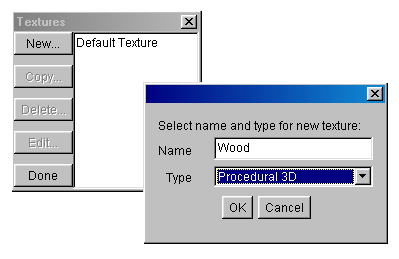

Tutorial di modellazione con Art of Illusion
La clessidra
Version 1.1
For Art of Illusion version 0.9
Copyright 2001, Rick van der Meiden
Translated in Italian by Alberto Porru

Introduzione
In questo tutorial vi verrà mostrato come modellare un semplice oggetto
con Art-of-Illusion (AoI), usando come esempio la clessidra riportata
nella figura qui sopra. Questo tutorial non tratterà tutte le
caratteristiche e le opzioni che è possibile trovare in AoI, perchè sono
davvero troppe, ma dovrebbe costituire un buon punto di partenza. Potrete
scoprire il resto provando, sperimentando e creando belle immagini. Se già
avete familiarità con la modellazione tridimensionale, non avrete
probabilmente bisogno di seguire questo tutorial passo per passo. Potrete
dargli uno sguardo per avere un'idea delle possibilità del programma, ma è
proprio il caso di provarlo. Riuscirete ad ottenere la vostra immagine 3D in
pochi minuti. Per completezza, la scena di AoI chiamata "hourglass.aoi"
viene distribuita assieme a questo tutorial e potrete aprirla con il
programma. Se tuttavia volete imparare qualcosa da questo tutorial, dovreste
provare a creare la scena per conto vostro.
Uno sguardo d'insieme
Ammettiamo che abbiate scaricato l'intero pacchetto di AoI, avete la
versione corretta di JDK, avete letto i file leggimi, ecc. Se non lo avete
fatto, collegatevi alla Art-of-Illusion home page.
Quando lanciate AOI, vi trovate di fronte una schermata principale. In
cima alla finestra troverete la barra dei menu; datele uno sguardo, guardate
cosa c'è nei menu a discesa. Se ci sono molte cose che non riuscite a
capire, non state a preoccuparvi, con il tempo ci riuscirete. A sinistra
vedete alcune icone. Cliccando su di esse selezionate uno strumento e un
aiuto contenuto in una linea di testo vi aiuterà per operazioni di base: lo
trovate in basso nella schermata. Le icone sono:
| sposta oggetto |
 |
|
ruota oggetto |
| ridimensiona oggetto |
 |
 |
crea parallelepipedo |
| crea sfera |
 |
 |
crea cilindro |
| crea mesh spline |
 |
 |
crea poligono |
| crea telecamera |
 |
 |
crea luce |
| crea curva interpolata |
 |
 |
crea curva approssimata |
| muovi vista |
 |
 |
ruota vista |
La pate più grande della finestra mostra le quattro viste del modello 3D: Front
(Fronte), Left (Sinistra), Top (Sopra) e Camera1. Per ciascuna
vista l'utente può impostare un punto di vista standard (front, left, top, ect)
o uno relativo ad una telecamera, con modalità prospettica o parallela, e
un fattore di ingrandimento (per default è 100). Questi punti di vista
possono essere cambiati usando i due appositi strumenti per la spostamento e
la rotazione delle viste. Spesso potrete cambiare la dimensione e la
posizione delle viste ma non il punto di vista. Le viste standard sono per
lo più sufficienti alla maggior parte delle sessioni di modellazione. Solo
la vista a destra in basso, Camera1, verrà modificata spesso perchè
è molto utile per la verifica del modello. A destra troverete una lista di
oggetti (per ora quasi vuota) del vostro modello. Da questa lista potrete
selezionare e deselezionare un oggetto cliccando sul suo nome. Inoltre,
facendo doppio click farete comparire la finestra di dialogo edit object
(modifica oggetto). Prima di iniziare, è necessario conoscere una cosa: le
coordinate. La posizione e la dimensione di un oggetto è determinata
da un sistema di coordinate con tre assi, X, Y e Z. L'asse delle X è
rivolto verso destra, cioè: maggiore è l'ascissa di un punto, più a
destra sarà il modello. Analogamente, l'asse Y punta verso l'alto e l'asse
Z punta in direzione del vostro punto di vista (è un sistema di coordinate
destrorso).
Cominciamo
E' comunemente considerata una buona pratica schizzare dapprima il vostro
modello 3D sulla carta millimetrata, per avere un'idea delle sue dimensioni
e della sua forma. Se non lo avete fatto, almeno impostate una griglia nel
programma:
- selezionate Scene->Grids dal menu
- impostate Spacing a 0.5
- impostate Subdivisions a 10
- spuntate Show grid e Snap to grid
- click OK
Questo vi consentirà di disegnare facilmente gli oggetti nella posizione
corretta e con adeguate dimensioni, e di allineare gli oggetti
ortogonalmente. Potete cambiare i parametri della griglia in qualsiasi
momento, per adattarli alle vostre esigenze ottenendo una griglia più
stretta o più larga. Cominciamo a disegnare. Disegnate per prima cosa un
parallelepipedo per la tavoletta in legno superiore e inferiore che fanno
parte della clessidra:
- selezionate lo strumento 'create box'
- disegnate un parallelepipedo largo 1.5 unità e alto 0.1 unità nella vista
frontale; quindi, con una griglia di 0.5 unità e 10 divisioni, 3 linee della
griglia di larghezza e una di altezza.
- selezionate lo strumento 'resize object'
- ridimensionate l'oggetto nella vista dall'alto (top) finchè non diventa
quadrato, 1.5x1.5 unità.
- selezionate lo strumento 'move object'
- spostate il parallelepipedo in modo che sia centrato nella vista superiore
- spostatelo, stavolta nella vista frontale, in modo che si trovi appena al
di sotto della seconda linea della griglia dal centro.
- controllate la finestra di dialogo delle coordinate, dal menu Object->Object-Layout.
Dovreste leggere una dimensione (size) di 1.5 unità sull'asse X, 0.1 unità
sull'asse Y e di nuovo di 1.5 sull'asse Z. La posizione della sua origine
dovrebbe trovarsi a <0, -1.05, 0>. Da questa finestra di dialogo potete anche
cambiare la dimensione del parallelepipedo, la sua posizione e il suo
orientamento (vedi figura)

Notate che potete disegnare qualsiasi oggetto sia nella vista top, sia left
sia front. Poichè potete disegnare al massimo due dimensioni per volta,
dovrete impostare in seguito la terza dimensione. Potete usare gli
strumenti scale e move per cambiare la dimensione e la posizione del
parallelepipedo. Ma se avete un'idea precisa di quali debbano essere le
dimensioni, è più veloce usare la finestra di dialogo Object Layout. Il
primo parallelepipedo costituisce la base del nostro modello. La parte
superiore è del tutto identica, quindi createla con una copia.
- selezionate il primo parallelepipedo, Cube 1, dalla lista a destra
- selezionate Edit->Copy dal menu
- selezionate Edit->Paste dal menu
- spostate la copia verso l'alto finchè la parte inferiore del
parallelepipedo si trova a y=1. Fatelo usando indifferentemente:
- lo strumento 'move object'. Tenendo premuto
il tasto delle maiuscole, il movimento sarà solo ortogonale.
- l'opzione del menu Object->Layout Object. Centratelo a y=1.05.
- l'opzione del menu Object->Transform Object. Spostatelo 2 unità
verso l'alto nell'asse Y.
- l'opzione del menu Object->Align Objects. Allineate la parte
inferiore (lungo l'asse Y) a 0.
Ora abbiamo due parallelepipedi, simmetrici attorno all'origine. Notate che
entrambi i parallelepipedi sonno chiamati Cube1. Potete
cambiarne il nome selezionando dal menu l'opzione Object->Rename Object.
Nomi adatti potrebbero essere "Sopra" e "Base". In tal
modo è più facile individuarli quando li si seleziona dalla lista. Usando
le tecniche citate sopra possiamo anche creare i quattro sostegni tra le
tavolette superiore e inferiore. Usate lo strumento 'create cylinder'
per creare un cilindro con le seguenti proporzioni:
- position: X = 0.6, Y = 0, Z = 0.6
- size: X = 0.1, Y = 2, Z = 0.1
Create ora tre ulteriori cilindri negli altri angoli della clessidra.
Istruzioni:
- disegnate il primo cilindro nella vista frontale o di sinistra, in
modo da impostare il suo diametro e la sua lunghezza. Posizionate il cilindro
usando le altre viste.
- Create gli altri cilindri attraverso copie e spostamenti.
- Non potete vedere i cilindri appena creati nella vista superiore perchè
sono coperti dalla tavoletta superiore. Selezionate dal menu Scene->Display Mode->Wireframe,
e sarete in grado di vederli di nuovo.
Ora abbiamo il sostegno della clessidra. Usiamo ora lo strumento 'move viewpoint'
e quello 'rotate viewpoint' per
cambiare la vista a destra in basso (camera1). Potrete ora vedere il modello
da qualunque angolazione. Il risultato dovrebbe essere qualcosa del
genere: 
Un oggetto complesso
La forma più complessa della scena è il bulbo in vetro. Dobbiamo crearlo
usando lo strumento Lathe (tornio). Un oggetto lathe viene creato grazie
alla rotazione di una curva spline attorno ad un asse, che determina il
contorno dell'oggetto. Per creare la curva di contorno useremo lo
strumento create approximated curve.
Per rendere più preciso il lavoro del mouse, create dapprima una griglia
più fitta: spacing 0.2 con 2 subdivisions. Selezionate quindi Scene->One View
dal menu. Impostate il fattore di zoom al 200 per cento. Create la curva
spline aggiungendo i punti da 1 a 9, come mostrato nell'immagine qui sotto
(nello stesso ordine). Fate doppio click sul punto 9 per terminare la curva.
Assicuratevi che il primo e l'ultimo punto siano pressocchè allineati
sull'asse Y e tangenti alla tavoletta superiore e inferiore.  La curva approssimata non è molto intuitiva, ma consente di determinare la
direzione della curva in modo più esatto di quanto non sia possibile con la
curva interpolata. La direzione della curva all'inizio e alla fine viene
determinata solo dai punti adiacenti. La curva è verticale nel punto 5
perchè i punti 4 e 6 sono equidistanti verticalmente da tale punto. In
generale, in ogni punto la curva viene determinata dal punto immediatamente
precedente e dai due punti di definizione successivi (la curva è una spline
quadratica, detta anche spline di terzo ordine). Come asse centrale del
bulbo in vetro, useremo la linea che passa per le due estremità della
curva. Nel nostro disegno, questa è costituita dall'asse Y, ma usando la
linea anzidetta realizzeremo un oggetto solido. Per creare l'oggetto lathe,
selezionate dapprima la curva e scegliete dal menu Tool->Lathe.
Nella relativa finestra di dialogo, selezionate, come asse per l'operazione
di tornitura, Line though endpoints. (Vedi figura in
basso).
La curva approssimata non è molto intuitiva, ma consente di determinare la
direzione della curva in modo più esatto di quanto non sia possibile con la
curva interpolata. La direzione della curva all'inizio e alla fine viene
determinata solo dai punti adiacenti. La curva è verticale nel punto 5
perchè i punti 4 e 6 sono equidistanti verticalmente da tale punto. In
generale, in ogni punto la curva viene determinata dal punto immediatamente
precedente e dai due punti di definizione successivi (la curva è una spline
quadratica, detta anche spline di terzo ordine). Come asse centrale del
bulbo in vetro, useremo la linea che passa per le due estremità della
curva. Nel nostro disegno, questa è costituita dall'asse Y, ma usando la
linea anzidetta realizzeremo un oggetto solido. Per creare l'oggetto lathe,
selezionate dapprima la curva e scegliete dal menu Tool->Lathe.
Nella relativa finestra di dialogo, selezionate, come asse per l'operazione
di tornitura, Line though endpoints. (Vedi figura in
basso).
 La forma viene automaticamente centrata a 0,0,0. E' esattamente quel che
volevamo, quindi lasciate le cose come stanno (naturalmente non è una
coincidenza, tutto era stato accuratamente pianificato!). La curva spline
creata per prima è ora ridondante. Potete cancellarla, ma non è
strettamente necessario visto che non comparirà nel rendering finale. Per
cancellare un oggetto, selezionatelo (dallo schermo o dalla lista degli
oggetti) e premete il tasto Canc della tastiera. Potete anche usare la voce
di menu Edit->Clear.
La forma viene automaticamente centrata a 0,0,0. E' esattamente quel che
volevamo, quindi lasciate le cose come stanno (naturalmente non è una
coincidenza, tutto era stato accuratamente pianificato!). La curva spline
creata per prima è ora ridondante. Potete cancellarla, ma non è
strettamente necessario visto che non comparirà nel rendering finale. Per
cancellare un oggetto, selezionatelo (dallo schermo o dalla lista degli
oggetti) e premete il tasto Canc della tastiera. Potete anche usare la voce
di menu Edit->Clear.
Layout della scena
Abbiamo finito con la modellazione. Possiamo provare ad effettuare il
rendering della scena con le forme accurate e con le luci. Prima del
rendering, però, dovremmo determinare il layout degli elementi chiave della
scena, la telecamera e la luce. Per prima cosa, determiniamo la posizione e
l'orientamento della telecamera. Può essere fatto facilmente usando
l'anteprima della telecamera, nel quadrante in basso a destra. Traslate
e ruotate la vista usando lo strumento e Move view
e Rotate view. Tenete premuto il tasto CTRL
mentre muovete la vista nelle diverse direzioni. Potete ruotare la vista
tenendo premuto il tasto CTRL e usando lo strumento Rotate View. Potete
anche posizionare la telecamera usando lo strumento move object
e rotate object o con l'opzione del menu Layout object.
La telecamera è un oggetto come qualsiasi altro. Una buona posizione
potrebbe essere quella in cui vedete l'oggetto dall'alto e dagli altri lati.
Ora dobbiamo illuminare la scena. Come potete vedere c'è già una sorgente
luminosa nella scena fin dall'inizio della sessione, Light 1.
La sorgente luminosa dovrebbe essere posizionata in modo da illuminare il
lato dell'oggetto che stiamo guardando. Data la posizione della telecamera, Light 1
probabilmente non è posizionata correttamente. Poichè inoltre la luce è
troppo lontana, la cancelleremo e ne creeremo una nuova. AoI supporta tre
tipi di luce: point lights, directional lights e spot lights.
Useremo la più semplice di esse, point light. Seguite i passi
successivi per illuminare correttamente la scena:
- Trovate una posizione per la nuova luce vicino alla telecamera o almeno
dalla stessa parte dell'oggetto telecamera. Usate un basso fattore di zoom
(30) per individuare la telecamera nella viste.
- Per creare la luce, cliccate sull'icona create lightsource
(crea luce) e cliccate sulla posizione in cui volete la luce. Dovrete
probabilmente muovere la luce (come muovereste un altro oggetto) in una
delle altre viste per ottenere la giusta posizione nello spazio
tridimensionale.
- selezionate Object->Edit Object dal menu. Dovremo cambiare
qualche proprietà della sorgente luminosa per adeguare la sua posizione
relativamente alla clessidra. Guardate l'immagine relativa alla finestra
di dialogo, qui in basso, per i valori esatti. Il valore di default di Intensity
è un po' alto, e produrrebbe una figura dove sembrerebbe che la
telecamera sia circondata dalla luce. Cambiate il valore dell'intensità a
0.8. Impostate il Decay Rate a zero. Questo valore determina
quanto velocemente decade l'intensità di luce con l'aumentare della
distanza. Ad onor del vero, il decadimento della intensità luminosa è
proporzionale al quadrato della distanza. Il valore di default di Decay Rate
potrebbe produrre un'immagine un po' scura. Questa scena semplice, del
resto, non richiede un realismo tanto spinto, quindi rendiamo le cose
semplici e disabilitiamo (impostandolo a 0) Decay Rate.

Ora via con il rendering. Selezionate dal menu Scene->Render Scene.
Non perdete tempo con le impostazioni, premete OK nella finestra di dialogo
del render. Il risultato dovrebbe assomigliare a qualcosa del genere.
 Un po' noioso, non è vero? Tutto è bianco opaco. Vogliamo legno e vetro,
quindi è arrivato il momento di aggiungere le textures.
Un po' noioso, non è vero? Tutto è bianco opaco. Vogliamo legno e vetro,
quindi è arrivato il momento di aggiungere le textures.
Textures e materiali
Legno
Creiamo una texture che riproduca il legno. Selezionate dal menu Scene->Textures
e premete New nella finestra di dialogo relativa. Nella
finestra di dialogo che appare successivamente, chiamate la texture Wood
e selezionate il tipo procedural 3D (vedi figura). 
Le texture procedurali 3D determinano colore, scabrezza, riflessione e
altre proprietà della superficie come una funzione delle coordinate 3D. Per
ciascuna posizione dello spazio, la texture definisce come deve apparire la
superficie, come se avessimo ricavato la forma ritagliandola da un blocco
solido di tale "materiale". Tuttavia, per gli oggetti in cui
possiamo realmente vedere all'interno, cioè oggetti trasparenti, dovremmo
usare un materiale per definirne l'interno, non una texture.
Le texture determinano solo come deve apparire la superficie di un oggetto.
Una funzione che mappi le coordinate tridimensionali grazie ai valori delle
proprietà della texture viene creata connettendo graficamente i componenti
della funzione. Esistono sei categorie di componenti:
- Values (Valori) determinano un colore o un valore
costante, che può essere usata come input per altri valori.
- Functions (Funzioni) sono componenti che restituiscono
valori scalari.
- Color functions (Funzioni di colore) restituiscono come output
valori di colore.
- Transforms trasforma le coordinate in un nuovo insieme di
coordinate.
- Patterns determinano un valore scalare come una funzione di
valori di coordinate. Questo valore scalare può essere usato per
determinare un pattern di colore per la texture o per realizzare un
pattern partendo da altre proprietà della texture.
Quando create una nuova texture, vi viene presentato una finestra di dialogo
dove specificare la texture. C'è una grande area vuota, nella quale potete
aggiungere i componenti della funzione. A destra trovate dei riquadri con
nomi come diffuse, specular, tansparent, etc. Sono proprietà
della texture da connettere ai componenti aggiunti nell'area vuota. I
seguenti componenti devono essere aggiunti alla procedura per realizzare una
texture del legno:
- Selezionate dal menu Insert->Patterns->Wood. E' un
pattern costituito da bande cilindriche concentriche lungo l'asse Z, come una
sezione del tronco di un albero che riporta anelli concentrici di colori
diversi. Gli input di default di questi componenti sono i valori delle
tre coordinate X, Y e Z e un valore di rumore di 0.5. Vanno bene così
come sono, quindi non dobbiamo aggiungervi altri componenti.
- Useremo questo pattern per il colore diffuso della texture. Selezionate dal
menu Insert->Color Functions->Custom. Connettete il componente
del pattern wood alla funzione di colore personalizzata, e connettete la
funzione di colore al componente del colore diffuso, a destra della finestra
di dialogo (vedi figura sotto). Vedrete apparire gli anelli nell'immagine di
anteprima.

- Successivamente dobbiamo aggiungere qualche colore che ricordi il legno alla
texture.
Per farlo, fate doppio click sul componente della funzione
di colore personalizzata; vi troverete di fronte a questa finestra di dialogo.
Aggiungete dei markers (rappresentati da piccoli triangoli) e impostate il
colore per ogni triangolo in modo da ottenere i colori come quelli riportati qui
in basso.

- Infine, renderemo la texture legnosa un po' più densa, con più anelli.
Cliccate due volte sul componente del pattern wood e impostatene i valori come
mostrato.

L'anteprima ora appare come questa:
 La texture non sembra in verità molto realistica, ma per ora ci basterà.
Per creare texture più complesse, leggete la sezione delle texture
nel manuale di Art-of-Illusion. Questa
texture verrà assegnata alle tavolette superiore e inferiore e alle
bacchette tra essi, che abbiamo precedentemente creato. Selezionate tutti
gli oggetti a cui dobbiamo assegnare la texture legnosa. Quindi selezionate
dal menu Object->Set Texture. Ora selezionate la texture Wood e
premete O.K. Selezionate ora solo gli oggetti Sopra e Base.
Richiamate nuovamente la finestra di dialogo delle texture. Cliccate ora sul
pulsante indicato con Edit Mapping. In questa finestra di
dialogo, potete ridimensionare, traslare e ruotare la texture perchè si
adatti all'oggetto. La ruoteremo soltanto, per ottenere questo
risultato.
La texture non sembra in verità molto realistica, ma per ora ci basterà.
Per creare texture più complesse, leggete la sezione delle texture
nel manuale di Art-of-Illusion. Questa
texture verrà assegnata alle tavolette superiore e inferiore e alle
bacchette tra essi, che abbiamo precedentemente creato. Selezionate tutti
gli oggetti a cui dobbiamo assegnare la texture legnosa. Quindi selezionate
dal menu Object->Set Texture. Ora selezionate la texture Wood e
premete O.K. Selezionate ora solo gli oggetti Sopra e Base.
Richiamate nuovamente la finestra di dialogo delle texture. Cliccate ora sul
pulsante indicato con Edit Mapping. In questa finestra di
dialogo, potete ridimensionare, traslare e ruotare la texture perchè si
adatti all'oggetto. La ruoteremo soltanto, per ottenere questo
risultato. 
Ora pensiamo alle bacchette. Selezionatele tutte e modificate la
mappatura. Create una mappatura come questa:

Ora vediamo il risultato. L'immagine dopo il rendering dovrebbe somigliare a
questa: 
Vetro
Il bulbo di vetro deve avere le proprietà del vetro. Cioè deve essere
trasparente alla luce e deve anche riflettere la luce sulla sua superficie.
La luce che passa attraverso un vetro viene rifratta e attenuata (cioè
diminuisce di intensità e cambia colore). La riflessione e la trasparenza
sono proprietà della texture. La rifrazione e l'attenuazione sono
proprietà del materiale dell'oggetto. I materiali possono essere assegnati
solo agli oggetti solidi. Questo ha senso perchè l'entità della
attenuazione e la direzione della luce dopo la rifrazione dipendono dal
punto in cui entra un raggio luminoso e dal punto attraverso il quale esce
dall'oggetto. Fortunatamente, il nostro bulbo è un oggetto solido. Tutte le
forme lathe, ottenute grazie alla rotazione attorno all'asse rappresentato
dalla linea che congiunge le estremità del profilo della curva, sono
solidi. Dapprima dovremo creare la texture per il vetro, e dopo il materiale
relativo. Nella finestra di dialogo per le texture, create una
nuova uniform texture chiamandola Glass. Questa texture
rende la superficie trasparente, in modo che il materiale all'interno sia
visibile, e determina l'ammontare della riflessione speculare. l'immagine
sottostante mostra quali impostazioni devono essere usate per la texture. La
trasparenza è controllata sia da Transparent Color sia dal valore
di Transparency. La frazione rossa, verde e blu del colore
trasparente determinano quanto rimane di ciascuna componente del colore
quando la luce passa attraverso al superficie. E' un filtro di colore. Il
colore di default, bianco, significa che passa attraverso la superficie la
luce di qualsiasi colore. Nero significa che non passa nessun colore. Il
valore della trasparenza determina la frazione totale della luce che vi
passa attraverso. Un valore di 0.7 significa che passa attraverso la
superficie il 70 per cento della luce incidente. Significa anche che il
componete trasparente determina il colore della superficie per il 70 per
cento. Il restante 30 per cento del colore sarà determinato al 100% dalla
riflessione, quindi il valore di Specular dovrà essere
impostato a 1.0. La componente del colore diffuso della superficie non
influenza il colore risultante, date queste impostazioni. Useremo un
materiale per colorare il vetro.  Per creare un nuovo materiale, selezionate dal menu Scene->Materials
e cliccate sul pulsante New. Il nuovo materiale può essere anch'esso
chiamato Glass. Deve essere un materiale uniforme (uniform material).
Potete vedere l'impostazione dei parametri nell'immagine sottostante. Il
colore di un materiale è influenzato da due parametri: Material color
e Transparent Color. Entrambi i parametri del colore attenuano il
colore della luce che passa attraverso il materiale. Il colore del materiale
influenza solo il colore della luce che colpisce la telecamera direttamente,
è il colore che l'oggetto sembra avere. Transparent Color influenza
tutta la luce che passa attraverso l'oggetto, e colore anche le ombre
proiettate dall'oggetto. Il primo parametro di colore è facile da usare
perchè specifica di quale colore deve apparire l'oggetto. Tuttavia, Transparent
Color specifica la frazione di rosso, verde e blu che vi passa attraverso.
Il resto della luce viene riflessa e determina il colore dell'oggetto.
L'entità dell'attenuazione è determinata dal valore di Density.
Un valore di zero significa che non c'è attenuazione. Per il vetro
specificheremo un colore verde che apparirà solo su oggetti molto massicci.
.
Per creare un nuovo materiale, selezionate dal menu Scene->Materials
e cliccate sul pulsante New. Il nuovo materiale può essere anch'esso
chiamato Glass. Deve essere un materiale uniforme (uniform material).
Potete vedere l'impostazione dei parametri nell'immagine sottostante. Il
colore di un materiale è influenzato da due parametri: Material color
e Transparent Color. Entrambi i parametri del colore attenuano il
colore della luce che passa attraverso il materiale. Il colore del materiale
influenza solo il colore della luce che colpisce la telecamera direttamente,
è il colore che l'oggetto sembra avere. Transparent Color influenza
tutta la luce che passa attraverso l'oggetto, e colore anche le ombre
proiettate dall'oggetto. Il primo parametro di colore è facile da usare
perchè specifica di quale colore deve apparire l'oggetto. Tuttavia, Transparent
Color specifica la frazione di rosso, verde e blu che vi passa attraverso.
Il resto della luce viene riflessa e determina il colore dell'oggetto.
L'entità dell'attenuazione è determinata dal valore di Density.
Un valore di zero significa che non c'è attenuazione. Per il vetro
specificheremo un colore verde che apparirà solo su oggetti molto massicci.
.

Il rendering finale
Il vetro appena creato non può essere renderizzato con un rendering raster
usato precedentemente. Aprite la finestra di dialogo del render (Scene->Render Scene)
e selezionate il renderer Raytracer. Con la tecnica del raytracing,
vengono proiettati "raggi di luce" dalla telecamera e viene
rilevato dove questi intercettano gli oggetti. In questo punto dell'oggetto,
i raggi vengono proiettati verso la sorgente luminosa per calcolare
l'illuminazione e le ombre. Dagli oggetti con una componente di riflessione
speculare o di trasparenza, vengono proiettati nuovi raggi per calcolare
come si vede l'oggetto stesso in virtù della riflessione o del materiale
trasparente. Lo sfondo nero di default rende il materiale vetro poco
credibile. Per migliorare l'aspetto del vetro, abbiamo utilizzato uno sfondo
chiaro. Nella versione 0.8, c'è un errore per cui usando un colore solido
come sfondo si va incontro ad un errore del rendering, quindi useremo una
texture come sfondo. Selezionate Scene->Environment dal menu. In
questa finestra di dialogo, selezionate come sfondo texture-diffuse.
Potete creare una nuova texture con un diverso colore o forse un'immagine
procedurale (le nuvole sono un buon esercizio) ma useremo per ora la texture
di default. Infine, per migliorare la qualità dell'immagine, spuntate
l'opzione antialiasing nella finestra di dialogo del render. E
se la vostra sorgente di luce (non-direzionale) si trova vicino all'oggetto,
spuntando soft shadows otterrete un'immagine più realistica.
Entrambi le opzioni impongono al raytracer di proiettare più raggi per
calcolare ciascun pixel. I risultati vengono mediati per creare un'immagine
meno netta. Il numero massimo e minimo di raggi per pixel (rays per pixel)
impostati a valori alti forniscono una qualità dell'immagine superiore ma
rallentano il rendering. Per un'immagine da realizzare velocemente, non
usate queste opzioni. Si può ottenere una buona qualità impostando minimo
e massimo a 4 e 16 raggi rispettivamente. Sono necessari più raggi se sono
presenti ampie aree con ombre sfumate. Le impostazioni del raytracer e
l'immagine risultante sono mostrate sotto.


Immaginate
Qui finisce il tutorial, ma Art of Illusion ha molte più capacità di
quelle mostrate qui. Dagli altri tutorial e manuali (nel momento di scrivere
ancora in fase di compilazione) potrete saperne di più. Molte delle
caratteristiche più intriganti sono abbastanza intuitive, e potete
semplicemente fare delle prove per valutarne l'effetto. Usando i concetti
fondamentali trattati in questo tutorial potete iniziare a modellare le
parole della vostra immaginazione. Gradualmente, non appena imparerete a
padroneggiare tutte le opzioni del programma, farete sempre di meglio. Buona
fortuna.